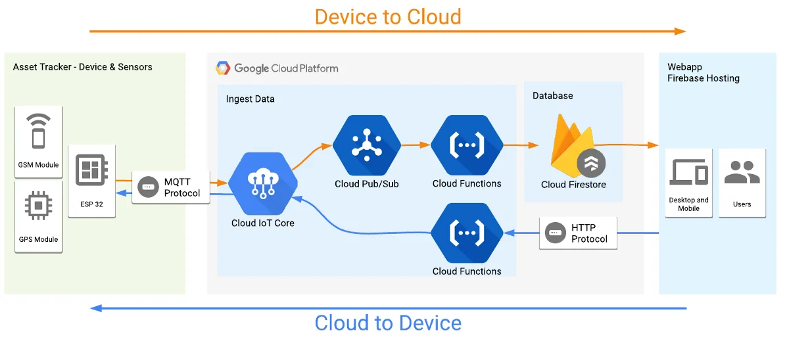
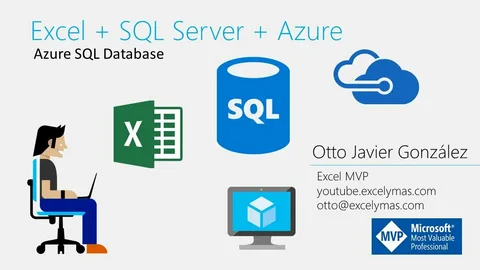
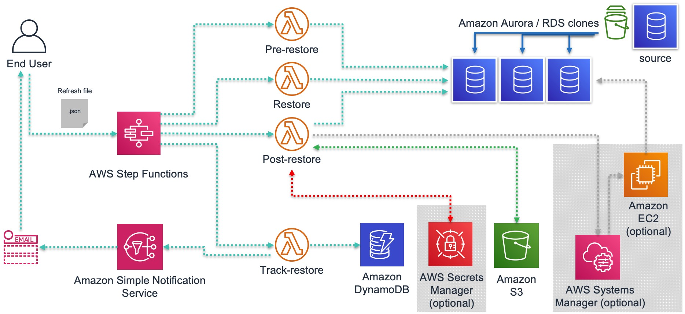

1.Бұлтты деректер базаларының түрлерін сипаттаңыз.
2.AWS RDS (Relational Database Service) пайдалану.
3.Azure SQL Database-ты конфигурациялау.
4.Google Cloud Firestore-да деректерді сақтау.
5.Деректер базасын резервтеу және қалпына келтіру стратегияларын жасау.
  